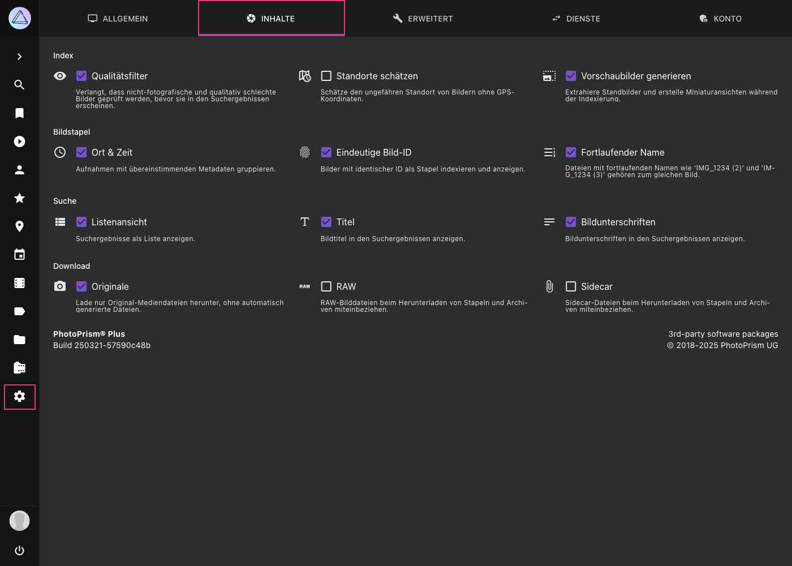

Einstellungen > Inhalte¶

Einige dieser Einstellungen sind nur für Super Admins verfügbar.
Index¶
Qualit√§tsfilter¶
Erfordert eine Überprüfung von nicht fotografischen und qualitativ schlechten Bildern, bevor sie in den Suchergebnissen erscheinen.
Sch√§tzungen¶
Schätzt den Standort von Bildern, die ohne GPS-Informationen aufgenommen wurden, indem er aus dem Standort anderer Bilder, die am selben Tag aufgenommen wurden, extrapoliert wird.
Beachte, dass, wenn du Bilder von nicht zusammenhängenden Veranstaltungen an verschiedenen Orten hast, die GPS-Koordinaten der Bilder von einer Veranstaltung auf die Bilder der anderen Veranstaltung angewendet/extrapoliert werden, denen die Koordinaten fehlen (auch wenn diese in verschiedenen Ordnern sind).
Für nicht-fotografische Bilder oder Bilder ohne Kamerainformationen wird keine Standortbestimmung durchgeführt.
Vorschaubilder¶
Erstellt automatisch JPEG-Vorschaubilder für andere Dateitypen, damit sie in den Suchergebnissen und im Vollbildmodus angezeigt werden können.
Die Option Vorschaubilder sollte nicht deaktiviert werden, da sie PhotoPrism daran hindert, andere Dateitypen als JPEG zu indexieren, es sei denn, es gibt bereits JPEG-Sidecar-Dateien mit demselben Dateinamenpräfix. Siehe Bildstapel, um mehr über die Namenskonventionen von Sidecar-Dateien zu erfahren.
Um zu verhindern, dass unerfahrene Benutzer versehentlich die Erstellung von Vorschaubildern deaktivieren, können Vorschaubilder nur deaktiviert werden, wenn Experimentelle Funktionen aktiviert sind.
Bildstapel¶
PhotoPrism gruppiert zusammengehörige Dateien automatisch zu Bildstapeln. Bildstapel sind Gruppen von Dateien, die den gleichen Ursprung haben, sich aber in Qualität, Format, Größe oder Farbe unterscheiden.
Du kannst folgende Optionen nutzen, um Bilder zu gruppieren:
- Fortlaufende Dateinamen zum Beispiel
/2018/IMG_1234 (2).jpgund/2018/IMG_1234 (3).jpg - Gleicher Ort und Zeit Gruppiert Bilder, die an derselben GPS-Position und in derselben Sekunde aufgenommen wurden
- Gleiche eindeutige Bild-ID vergleicht die ImageUniqueID (Exif) oder Instance ID
Gleichnamige Dateien, die sich im selben Ordner befinden, z.B. /2018/IMG_1234.jpg und /2018/IMG_1234.avi, werden immer gruppiert.
Beachte, dass es nicht möglich ist, die Gruppierung von Dateien mit demselben Namen zu deaktivieren, da sonst wichtige Funktionen nicht mehr funktionieren würden. Beipsielsweise die Unterstützung von Apple Live Photos (die aus einer Foto- und einer Videodatei bestehen) sowie anderen Multidatei-/Hybridformaten wie RAW/JPEG und die Indexierung von Metadaten aus XMP/JSON Sidecar-Dateien.
Werden gruppierte Dateien automatisch getrennt, wenn die ich Einstellungen √§ndere?¶
Wenn du die Bildstapel-Einstellungen änderst, werden Dateien, die bereits gruppiert sind, nicht automatisch voneinander getrennt. Das liegt daran, dass das Entstapeln ein ressourcenintensiver Vorgang ist, bei dem jede Datei neu indexiert werden muss.
Das Ergebnis hängt auch von der genauen Reihenfolge ab, in der du die Dateien entstapelst, da z. B. Nicht-Medien-Sidecar-Dateien an die verbleibende Mediendatei in einem Stapel gebunden bleiben. Wir denken darüber nach, in einer zukünftigen Version einen entsprechenden Befehl bereitzustellen.
Wenn du PhotoPrism zum ersten Mal verwendest und deine Bibliothek mit anderen Einstellungen neu indexieren möchtest, kannst du den Befehl photoprism reset in einem Terminal ausführen, um den Index zurückzusetzen und von vorne zu beginnen. Mehr erfahren >
Welche fortlaufenden Dateinamen werden unterst√ºtzt?¶
Dateien mit folgenden Namen werden mit /2018/IMG_1234.jpg gruppiert, falls Gruppieren bei fortlaufenden Dateinamen aktiviert ist.
/2018/IMG_1234 (2).jpg/2018/IMG_1234 (3).jpg/2018/IMG_1234 copy.jpg/2018/IMG_1234 copy 1.jpg/2018/IMG_1234 copy 2.jpg/2018/IMG_1234 (-2.7)/2018/IMG_1234 (+3.3).jpg/2018/IMG_1234(-2.7).jpg/2018/IMG_1234(+3.3).jpg
Suche¶
In diesem Abschnitt kannst du die Listenansicht und das Anzeigen von Titeln und Bildunterschriften in den Suchergebnissen deaktivieren.
Download¶
Originale¶
Nur Dateien aus dem Ordner originals werden heruntergeladen, nicht aber Dateien, die automatisch im Ordner sidecar erstellt wurden. Dies ist die empfohlene Standardeinstellung.
RAW¶
RAW Dateien herunterladen.
Sidecar¶
Sidecar-Dateien herunterladen, z.B. XMP-Metadaten. Dies wird im Allgemeinen nicht empfohlen, außer für professionelle Workflows.
Beachte, dass deine Einstellungen keine Auswirkungen auf ZIP-Archive haben, wenn du komplette Alben herunterlädst. Um Album-Downloads zu konfigurieren, können fortgeschrittene Benutzer die Datei settings.yml in ihrem config Ordner bearbeiten. Mehr erfahren ›